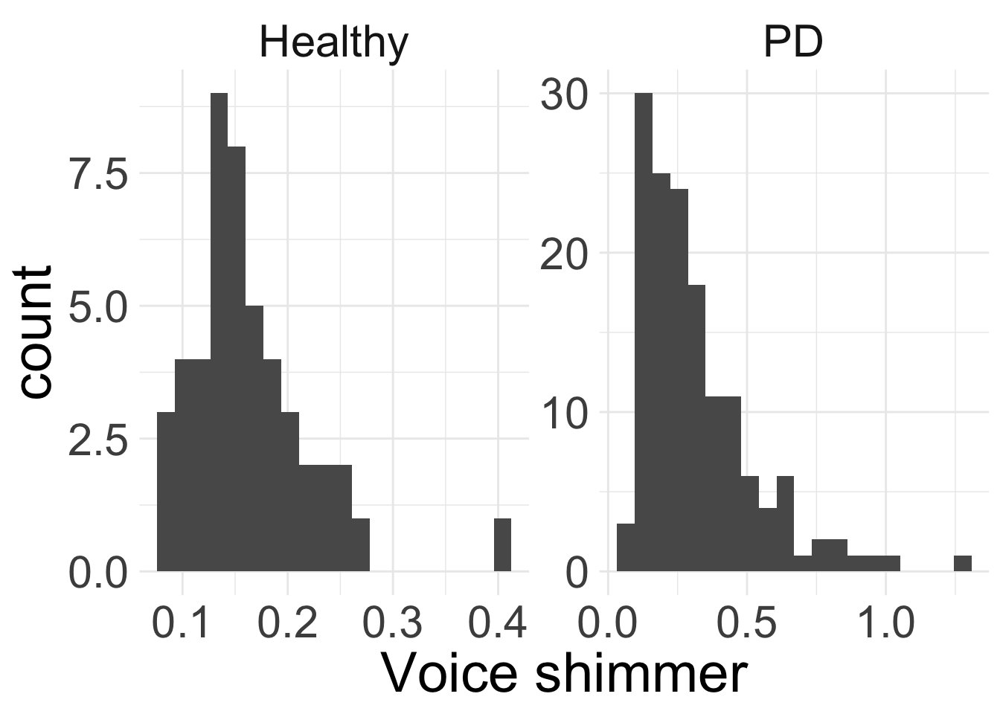

Hypothesis testing with CLT (cont.)
Difference in means
Housekeeping
No office hours tomorrow
Daylight savings this weekend
Data collection proposal due Monday 11/4 midnight!
Recap
Test for difference in two proportions
- Learned about \(\hat{p}_{pooled}\)
Test for a single mean
\(z\)-test: we know \(\sigma\), use standard Normal distribution
\(t\)-test: we don’t know \(\sigma\), use \(t\) distribution
CI for paired mean
Paired data
Suppose we have two sets of observations/data \(\boldsymbol{x} = (x_{1}, x_{2}, \ldots x_{n})\) and \(\boldsymbol{y} = (y_{1}, y_{2}, \ldots, y_{n})\)
The data are considered paired data if each \(x_{i}\) corresponds to exactly one \(y_{i}\)
Example: your score on the midterm and your score on the final
When analyzing paired data, we are typically interested in the difference in outcomes of each pair of observations
Paired differences
Let \(d_{i} = y_{i} - x_{i}\) for each \(i = 1,\ldots, n\) be the observed differences
The \(d_{i}\) come from larger population with true mean difference \(\mu_{d}\) and standard deviation of differences \(\sigma_{d}\)
The sample mean difference and sample standard deviation of the differences are
\[\bar{d} = \frac{1}{n}\sum_{i=1}^{n} d_{i} \qquad \qquad s_{d} = \frac{1}{n-1}\sum_{i=1}^{n} (d_{i} - \bar{d})^2 \]
CLT for mean difference in pairs
Suppose the \(n\) observational units are independent and the distribution of the differences is approximately normal. Then CLT says:
\[ \bar{d} \overset{\cdot}{\sim} N\left(\mu_{d}, \frac{\sigma_{d}}{\sqrt{n}} \right) \]
We are usually interested in performing inference for \(\mu_{d}\) when both \(\mu_{d}\) and \(\sigma_{d}\) unknown
Our formula for \(\gamma\times 100\%\) CI for \(\mu_{d}\) is analogous to the formula for one mean when \(\sigma\) unknown:
\[ \begin{align*} \text{point estimate} &\pm t^*_{df, (1+\gamma)/2} \times \widehat{\text{SE}} \\ \bar{d} &\pm t_{df, (1+\gamma)/2}^* \times \frac{s_{d}}{\sqrt{n}} \end{align*} \]
where \(df = n-1\)
Example: zinc
Data consist of measured zinc concentrations in bottom water and surface water at 10 randomly sampled wells:
Do the data suggest that the true average concentration in the bottom water is different than that of surface water? Let’s answer this using a 95% confidence interval.
bottom surface
1 0.430 0.415
2 0.266 0.238
3 0.567 0.390
4 0.531 0.410
5 0.707 0.605
6 0.716 0.609Are the data paired? Does CLT apply?
Example: zinc (cont.)
zinc <- zinc |>
mutate(d = bottom - surface)
d_bar <- mean(zinc$d)
d_bar[1] 0.0804s_d <- sd(zinc$d)
s_d[1] 0.05227321point estimate: \(\bar{d} = 0.0804\)
SE \(\approx\) \(\frac{s_{d}}{\sqrt{n}} = \frac{0.052}{\sqrt{10}} = 0.016\)
critical value: what code would you write?
\(df = n-1 = 9\)
\(t_{9, 0.975}^{*} =\)
qt(0.975,9)\(= 2.26\)
So our 95% confidence interval is:
\[0.0804 \pm 2.26(0.016) = (0.044, 0.117)\]
Do the data suggest that the true average concentration in the bottom water is different than that of surface water? Explain.
CIs for difference in two means
Difference of two means
Now consider two populations under the condition that the data/populations are not paired.
We might be interested in learning about whether or not the means of each population are equal (think about the voice jitter homework problem)!
Let \(\mu_{1}\) and \(\mu_{2}\) represent the population means for the two populations 1 and 2
Samples of size \(n_{1}\) and \(n_{2}\) from each population, respectively
We might think it reasonable to use \(\bar{x}_{1} - \bar{x}_{2}\) as a point estimate for \(\mu_{1} - \mu_{2}\)
Conditions for inference
Now that we have two populations, conditions for CLT and use of the \(t\)-distribution for inference will look slightly different:
Independence (extended): need data within and between the two groups
- e.g.the two data sets come from independent random samples or from a randomized experiment
Normality: we need to check for approximate normality for both groups separately
CI for difference in two means
If the conditions hold, then our usual formula for \(\gamma \times 100\%\) CI still holds:
\[ \text{point estimate} \pm \text{critical value} \times \text{SE} \]
- Point estimate
If \(\sigma_{1}\) and \(\sigma_{2}\) known:
\(\text{SE} = \sqrt{\frac{\sigma_{1}^2}{n_{1}} + \frac{\sigma_{2}^2}{n_{2}}}\)
critical value: \(z_{(1+\gamma)/2}^*\)
- \((1+\gamma)/2\) percentile of \(N(0,1)\)
If \(\sigma_{1}\) and \(\sigma_{2}\) unknown:
\(\text{SE} \approx \sqrt{\frac{s_{1}^2}{n_{1}} + \frac{s_{2}^2}{n_{2}}}\)
critical value: \(t_{df, (1+\gamma)/2}^*\)
\((1+\gamma)/2\) percentile of \(t_{df}\)
\(df = \min\{n_{1} -1, n_{2} - 1\}\)
Example: C02 concentrations
The Mauna Loa Observatory in Hawaii of monitors atmospheric solar, atmospheric, and meteorological parameters
Continuous measurements of atmospheric carbon dioxide (C02) began in March 1958
We have data on annual atmospheric C02 concentrations from 2000-2015.
We will conduct a hypothesis test to see if the average atmospheric C02 levels (ppm) from 2000-2015 is different from 350 ppm.
Rows: 66 Columns: 3
── Column specification ────────────────────────────────────────────────────────
Delimiter: ","
dbl (3): year, mean, unc
ℹ Use `spec()` to retrieve the full column specification for this data.
ℹ Specify the column types or set `show_col_types = FALSE` to quiet this message.Example: voice shimmer
Let’s consider the voice shimmer of PD vs non-PD patients from last week’s homework.
Rows: 195 Columns: 6
── Column specification ────────────────────────────────────────────────────────
Delimiter: ","
chr (2): clip, status
dbl (4): jitter, shimmer, hnr, avg.f.q
ℹ Use `spec()` to retrieve the full column specification for this data.
ℹ Specify the column types or set `show_col_types = FALSE` to quiet this message.Convince yourself that this data isn’t paired!
Population 1: people with Parkinson’s Disease
Population 2: people without Parkinson’s Disease
Research question: are average voice shimmers different between people with and without Parkinson’s? Create a 95% confidence interval to answer this question.
- We care about the difference in means \(\mu_{\text{PD}} - \mu_{\text{H}}\)
Example: voice shimmer (cont.)
Are average voice shimmers different between people with and without Parkinson’s? Create a 95% confidence interval to answer this question.
| status | n | xbar | s |
|---|---|---|---|
| Healthy | 48 | 0.163 | 0.058 |
| PD | 147 | 0.321 | 0.208 |

Do assumptions for CLT hold?
- Independence: random sample!
- Normality condition: \(n \geq 30\) in both groups with no particularly extreme outliers
Set-up/find the following:
- Point estimate
- Standard error
- Code for critical value
Example: voice shimmer (cont.)
Point estimate: \(\bar{x}_{\text{PD}} - \bar{x}_{\text{H}} = 0.32 - 0.16 = 0.158\)
SE \(\approx \sqrt{\frac{s_{\text{PD}}^2}{n_{\text{PD}}} + \frac{s_{\text{H}}^2}{n_{\text{H}}}} = \sqrt{\frac{0.21^2}{147} + \frac{0.06^2}{48}} = 0.019\)
Critical value:
\(df = \min\{n_{\text{PD}} -1, n_{\text{H}} -1 \} = \min\{147 - 1, 48- 1\} = 47\)
Want \(0.975\)-th percentile of \(t_{47}\) distribution:
qt(0.975, df =47)= 2.01
Putting everything together, our 95% CI for \(\mu_{\text{PD}} - \mu_{\text{H}}\) is: \[ 0.158 \pm 2.01 \times 0.019 = (0.12, 0.196) \]
Interpret this CI in context. Note: direction of difference matters!
Are average voice shimmers different between people with and without Parkinson’s? Briefly explain why or why not.
Hypothesis test for mean paired difference
Paired data (recap)
Recall paired data: we have two set of data \(\boldsymbol{x}\) and \(\boldsymbol{y}\) where each \(x_{i}\) has a corresponding to one \(y_{i}\)
Can obtain differences \(d_{i} = y_{i} - x_{i}\)
We are interested in the true mean difference \(\mu_{d}\)
Recall: if observational units are independent and the differences are approximately Normal, then CLT gives us:
\[ \bar{d} \overset{\cdot}{\sim} N\left(\mu_{d}, \frac{\sigma_{d}}{\sqrt{n}}\right) \]
- We don’t typically know \(\sigma_{d}\), so replace with sample \(s_{d}\) (and then use \(t\) distribution)
Hypothesis test
Hypotheses: \(H_0: \mu_{d} = \mu_{0}\) versus \(H_{A}: \mu_{d} \neq \mu_0\) (or \(>\) or \(<\) )
Obtain summary statistics \(\bar{d}_{obs}\) and \(s_{d}\)
Check if CLT holds. If so, what is our null distribution?
\[ \bar{d} \overset{\cdot}{\sim} N\left(\mu_0, \frac{\sigma_{d}}{\sqrt{n}} \right) \]
Because we don’t know \(\sigma_{d}\), our test statistic here is:
\[ t = \frac{\bar{d}_{obs} - \mu_0}{\frac{s_{d}}{\sqrt{n}}} \sim t_{df} \]
where \(df = n-1\)
Example: zinc (revisited)
Data consist of measured zinc concentrations in bottom water and surface water at 10 randomly sampled wells:
Do the data suggest that the true average concentration in the bottom water is greater than that of surface water? Let’s now answer this using a hypothesis test at the 0.05 level.
Define parameters and hypotheses
- Let \(\mu_{d}\) be the true mean difference between zinc concentrations (bottom-surface)
- \(H_{0}: \mu_{d} = 0\) versus \(H_{A}: \mu_{d} > 0\)
- Last week, we saw conditions for CLT were satisfied
Example: zinc (cont.)
zinc <- zinc |>
mutate(d = bottom - surface)
d_bar <- mean(zinc$d)
d_bar[1] 0.0804s_d <- sd(zinc$d)
s_d[1] 0.05227321Find the test-statistic
Example: zinc (cont.)
\[t = \frac{\bar{d}_{obs} - \mu_{0}}{s_{d}/\sqrt{n}} = \frac{0.0804 - 0}{0.052/\sqrt{10}} = 4.889 \sim t_{9}\]
So our p-value is \(\text{Pr}(T \geq t) = \text{Pr}(T \geq 4.889) = 1 - \texttt{pt(4.889, 9)} = 0\)
We reject \(H_{0}\)! The data provide convincing evidence that zinc concentrations of bottom well water is greater than those of surface water.
Hypothesis test for difference in means
Sampling distribution for difference in means
Two populations, interest in \(\mu_{1} - \mu_{2}\) (or other order)
Samples of size \(n_{1}\) and \(n_{2}\)
If CLT holds, we learned sampling distribution of difference in sample means is:
\[ \bar{X}_{1} - \bar{X}_{2} \overset{\cdot}{\sim} N\left(\mu_{1} - \mu_{2}, \sqrt{\frac{\sigma_{1}^2}{n_{1}} + \frac{\sigma_{2}^2}{n_{2}}} \right) \]
When we don’t know the population standard deviations, we replace the \(\sigma\) with \(s\) and use a \(t\) distribution
Same thing will happen for hypothesis test!
Same conditions for inference: independence (extended) and approximate normality/large sample size (extended)
Hypothesis test
Hypotheses \(H_{0}: \mu_{1} = \mu_{2}\) versus \(H_{A}: \mu_{1} \neq \mu_{2}\) (or \(>\) or \(<\))
- If CLT holds, our null distribution for the difference in sample means is:
\[ \bar{X}_{1} - \bar{X}_{2} \overset{\cdot}{\sim} N\left(0, \sqrt{\frac{\sigma_{1}^2}{n_{1}} + \frac{\sigma_{2}^2}{n_{2}} }\right) \]
In practice, use \(s_{1}\) and \(s_{2}\). So our test-statistic is…
\[ t= \frac{\text{point est} - \text{null value} }{\widehat{\text{SE}}_{0}} = \frac{(\bar{x}_{1} - \bar{x}_{2}) - 0}{\sqrt{\frac{s_{1}^2}{n_{1}} + \frac{s_{2}^2}{n_{2}}}} \sim t_{df} \]
where \(df = \min(n_{1}-1, n_{2}-1)\)
Activity
Munchkins!